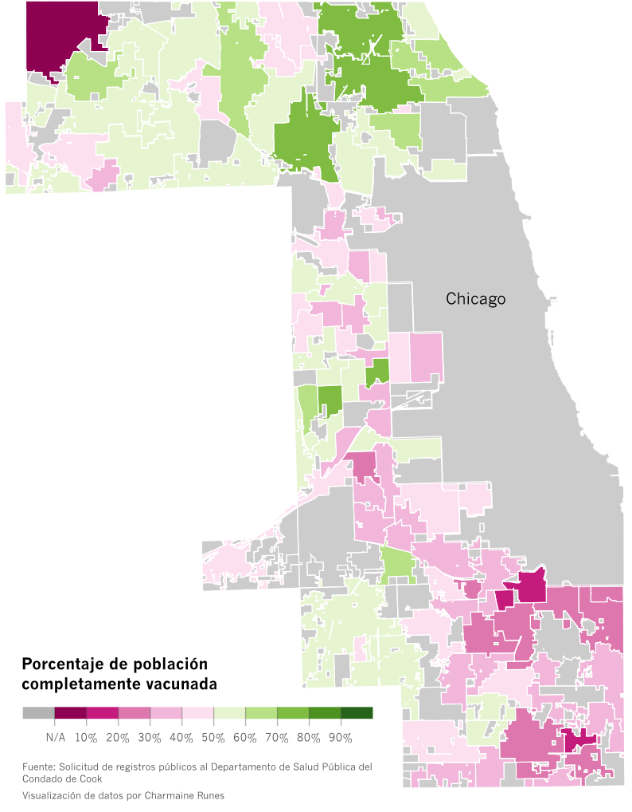
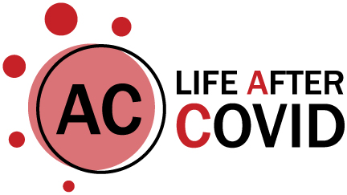

Ilustración por Eva Azenaro Acero
Read in English
En el Condado de Cook la gran desigualdad en la vacunación continúa en los suburbios negros y latinx
Pese a la asignación de fondos federales, en muchos suburbios las vacunas siguen siendo algo difícil de obtener.
Cicero Independiente y South Side Weekly
July 12, 2021
El racismo sistémico de Chicago va más allá de sus límites municipales. Al igual que el oeste y el sur de Chicago, los suburbios cercanos a la ciudad están integrados mayormente por comunidades negras y latinas de bajos ingresos que han resistido a la pandemia del COVID-19 con pocos recursos y con la escasez de atención médica. Estas zonas están integradas por un gran número de trabajadores esenciales que antes de la pandemia ya se enfrentaban a condiciones de trabajo abusivas e inseguras.
El Condado de Cook es el segundo condado más poblado del país, con 5.2 millones de habitantes de los cuales el cincuenta y nueve por ciento vive fuera de Chicago y cerca del cincuenta por ciento son personas de color.
En muchos de estos municipios, los gobiernos locales han sido lentos y a veces renuentes a responder a los cambios demográficos raciales. En contadas ocasiones, facilitan la participación en la vida cívica de los que no hablan inglés. Además, estudios anteriores han revelado la escasez de farmacias en comunidades negras y segregadas de Chicago, algo que se puede suponer razonablemente, se extiende más allá del oeste y del sur.
Históricamente, las grandes industrias que emiten contaminantes al aire y al agua han recibido exenciones tributarias y otros beneficios para así, atraerlas a establecerse en dichas áreas. Estas industrias también han impulsado la entrada y salida de la migración en esas comunidades. Por generaciones, la industria pesada ha hecho a los residentes vulnerables a condiciones de salud crónicas como es el asma que aumentan el riesgo de desarrollar un caso grave de COVID-19.
El objetivo declarado del Condado de Cook es vacunar al menos al ochenta por ciento de todos sus residentes. En abril de 2020, los funcionarios recibieron $428.6 millones en fondos COVID-19 por parte de la Ley de Ayuda, Alivio y Seguridad Económica por Coronavirus (CARES, por sus siglas en inglés). Establecieron un subcomité específicamente para la redistribución de fondos federales y distribuyeron $51 millones del alivio entre más de 300 unidades de gobierno.
En marzo pasado, el Departamento de Salud Pública del Condado de Cook anunció que treinta y dos suburbios del oeste y sur del Condado de Cook serían prioridad en los esfuerzos de equidad de vacunación del Condado. Cicero, Berwyn, Harvey, Dolton, Calumet City y Blue Island, recibieron la mayor cantidad de la ayuda federal.
Lea más a fondo


En Harvey, Calumet City, Dolton y más allá, la distribución de las vacunas aún es irremediablemente lenta, ya que algunos residentes enfrentan desigualdades desde tiempo atrás.
Tres meses después, los índices de vacunación en al menos siete de esas comunidades, las cuales son suburbios predominantemente negros y latinx, todavía están muy por debajo de los suburbios más ricos y blancos del Condado de Cook. La brecha en los índices promedio de vacunación entre estos siete suburbios y el resto del área suburbana del Condado de Cook se amplió de un punto porcentual a finales de enero a casi diez puntos porcentuales en mayo. Desde entonces, esta diferencia ha disminuido ligeramente (de 9.8 a 8.9 puntos porcentuales), pero aún existe una brecha considerable.
A mediados de marzo, el Condado de Cook abrió cinco sitios de vacunación masiva, incluyendo uno en South Suburban College. El 31 de marzo, la mayoría de los trabajadores esenciales del Condado de Cook fueron elegibles para la vacuna.
Mientras que el cuarenta y siete por ciento de la población del Condado de Cook ya ha sido completamente vacunada, un análisis del Weekly y de Cicero Independiente muestra que los índices vacunación en siete suburbios—Blue Island, Calumet City, Dolton y Harvey en el sur; y Berwyn, Cicero y Maywood al oeste—, donde la mayoría de la población es de color, oscilan entre el veintidós y el cuarenta y cuatro por ciento. Y las vacunas relativamente, tardaron en llegar.
La Agencia Metropolitana de Planificación de Chicago estima que muchas de las zonas censales en estos suburbios tienen un alto porcentaje de trabajadores esenciales.
Muchos suburbios afroamericanos y latinx tienen un mayor porcentaje de residentes que son trabajadores esenciales y tasas de vacunación más bajas


Los residentes y los defensores de la comunidad en estas áreas destacan barreras similares: falta en general, de atención a la salud, prácticas laborales explotadoras que dificultan pedir tiempo libre por enfermedad, falta de asistencia en idiomas distintos al inglés y la falta de inversión en estas áreas en en general, hace que los residentes tengan que recorrer millas para tener acceso a las necesidades básicas.
Durante meses, Cicero se ha mantenido como el suburbio con el mayor número de casos confirmados de COVID-19 en el Condado de Cook, incluyendo un brote inicial en un asilo de ancianos. A finales de abril, solo el 23 por ciento de la población de Cicero estaba completamente vacunada.
Más de un millón de dólares en fondos de la Ley CARES fueron asignados a Cicero y recientemente, Cicero Independiente reveló que el cien por ciento de los fondos de COVID-19 fueron destinados al departamento de policía. Además, el cuarenta y dos por ciento de los fondos federales asignados para todo el condado, se destinaron a cubrir los costos laborales de la oficina del alguacil del Condado de Cook.
Actualmente, el 39.2 por ciento de los residentes de Cicero han sido completamente vacunados, esto en gran medida gracias a que las organizaciones comunitarias en el área han realizado varios eventos de vacunación hiperlocales y campañas de registro para eliminar las barreras en la vacunación, como la falta de acceso a la tecnología, las barreras lingüísticas, los problemas de transporte, los lugares limitados y los horarios para las citas.
En abril y mayo, el Condado estableció sitios de vacunación prioritarios destinados a las personas que viven en los 32 municipios que se identificaron como de alta prioridad y más tarde, comenzó a permitir las vacunaciones sin cita.
“Los sitios hiperlocales de vacunación son parte de nuestra estrategia general para eliminar las barreras al acceso a las vacunas, al mismo tiempo que reconocemos que muchas personas se sienten más cómodas en su comunidad”, dijo en un comunicado Israel Rocha Jr., director ejecutivo del Departamento de Salud del Condado de Cook. “Nuestra estrategia de vacunación ha sido diseñada para llegar a todos los rincones del Condado de Cook”, aseguró.
En Harvey, ciudad mayoritariamente negra ubicada cerca de los límites del condado del sur, solo el 22.9 por ciento están vacunados. La población de Wilmette es un ochenta y tres por ciento blanca, según el conteo reciente del censo y para mediados de junio había sido completamente vacunada. En Wilmette, suburbio situado al norte del Condado de Cook con un tamaño poblacional similar al de Harvey, más del sesenta por ciento de los residentes han sido completamente vacunados.
“Si vamos a avanzar hacia la recuperación, hay que invertir en las comunidades que ya han sido destruidas y devastadas por el racismo estructural y la supremacía blanca”, dijo Brandon Johnson, comisionado de la Junta del Condado de Cook, sobre lo que se necesita hacer para abordar las desigualdades que enfrentan los suburbios del oeste y el sur del Condado de Cook que antes de la pandemia ya habían sido despojados de recursos.
La presidenta de la Junta de Comisionados del Condado de Cook, Toni Preckwinkle, dijo que financiar la salud pública no fue una prioridad para los ex directores generales del sistema de salud y de los hospitales. Agregó que “de cara al futuro, el objetivo será fortalecer nuestro departamento de salud pública y reforzarlo en su capacidad para enfrentar desafíos como este. Me temo que esta no será la última pandemia global que veremos”.
El Condado de Cook recibirá directamente más de mil millones de dólares del gobierno federal a través del Plan de Rescate Estadounidense y está en el proceso de desarrollar un plan de gastos para necesidades inmediatas de recuperación y para mejorar la infraestructura de la salud pública.

Este reportaje es parte de una colaboración que incluye al Instituto de Noticias sin Fines de Lucro (INN, por sus siglas en inglés); The Beacon/KCUR 89.3; Bridge Michigan/Side Effects Public Media; Cicero Independiente/South Side Weekly; Detour Detroit/Planet Detroit/Tostada Magazine; Evanston RoundTable/Growing Community Media; Madison365/Wausau Pilot & Review, y a MinnPost/Sahan Journal. El proyecto fue posible gracias a una subvención de la Robert Wood Johnson Foundation con apoyo adicional del Proyecto “Amplify News”, de INN y de la Red de Periodismo de Soluciones (SJN, por sus siglas en inglés).
Lea más a fondo
En Harvey, Calumet City, Dolton y más allá, la distribución de las vacunas aún es irremediablemente lenta, ya que algunos residentes enfrentan desigualdades desde tiempo atrás.